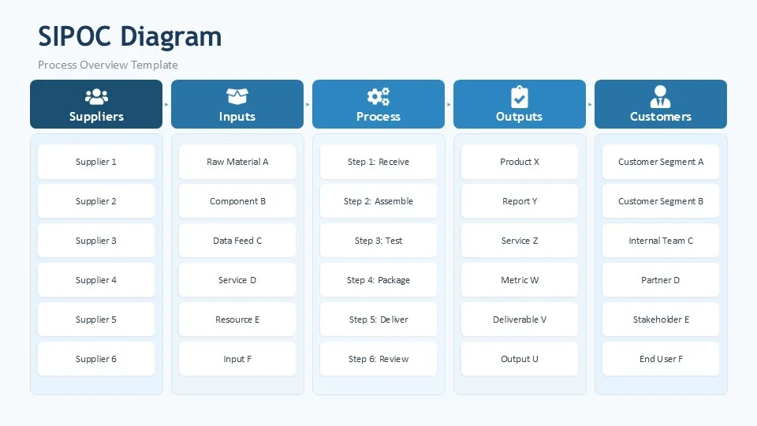
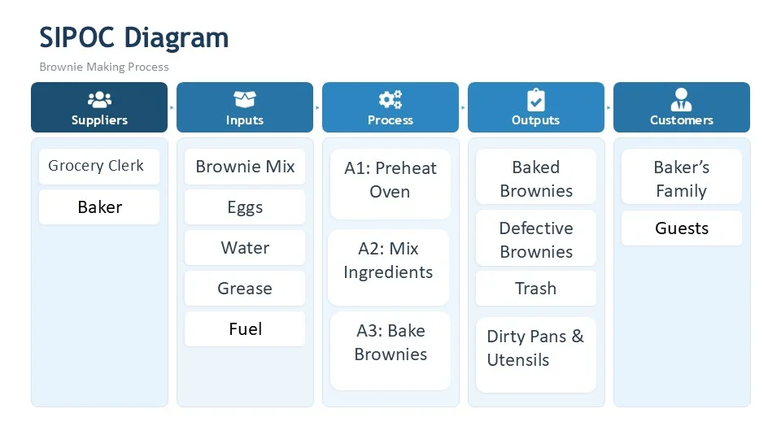

To see the forest and the trees, you develop the capability to step back and see the big picture, while simultaneously being able to zoom in and observe the trees. This series of articles will teach some practical things that will help you to cultivate this skill.
In Part I we introduced the Context Diagram and the four ICOM arrows that define the boundary of any process. In Part II we decomposed that context into an Activity Node Tree. In Part III we applied ICOMs to every node in that tree, tracing the flow of value from activity to activity.
The ICOM framework tells us what flows through a process, what governs each activity, and what enables it to execute. But there is one question it cannot answer: who?
Who provides the inputs? Who receives the outputs? Without naming the people, teams, or organizations on both ends of the process, we have a technically complete diagram with no human accountability attached to it. That is where SIPOC comes in.
What is SIPOC?
SIPOC is a framework that originated in Lean Six Sigma. The acronym stands for:
-
S
Supplier
Who provides the inputs to the process, an internal team, an external vendor, another process, or an individual
-
I
Input
What is provided, the materials, information, or resources that enter the process and are consumed or transformed
-
P
Process
The activities that transform the inputs into outputs, typically shown at the high-level L1 view
-
O
Output
What the process produces, the results, deliverables, or products that flow to the customer
-
C
Customer
Who receives the outputs, internal or external, the next process in line or the end recipient

The standard SIPOC template, five columns, one row per process, stakeholders named on both ends.
Notice what SIPOC adds that ICOMs alone cannot provide: a named Supplier on the left and a named Customer on the right. The process does not exist in isolation, it has accountable parties on both ends.
Notice also what SIPOC does not include: Controls and Mechanisms. SIPOC has no element for the external standards or constraints that govern the process, and no element for the tools, systems, or people that enable it to execute. That is not a flaw, it is a difference in purpose.
SIPOC provides
- Who supplies the inputs
- What enters the process
- What the process produces
- Who receives the outputs
ICOM provides
- What governs the process (Controls)
- What enables execution (Mechanisms)
- What flows in and out (Inputs / Outputs)
- Cross-activity dependencies
SIPOC is an accountability framework. ICOM is a structural and governance framework. Neither is complete on its own. Together, they are.
How SIPOC is Traditionally Taught
In most Lean Six Sigma training, SIPOC is introduced as a high-level process overview, a single diagram that captures the entire process on one page. The Process column shows the four to six major steps at the L1 level, the same level we identified in Part II. The Supplier and Customer columns name the key stakeholders at the boundaries of the whole process.
This is the traditional view: one SIPOC, one process, one page.
It is useful. It is fast to build. It gives leadership a quick stakeholder map that answers: who feeds this process and who depends on it? For a first conversation with a sponsor or an executive team, it is often exactly the right level of detail.
But it is also incomplete, and we will come back to exactly why at the end of this article.
Application: Baking Brownies, The Traditional L1 SIPOC
Let's apply the traditional SIPOC approach to the Baking Brownies process we have been building throughout this series.

The Baking Brownies SIPOC at L1, the traditional single-page process overview.
Supplier
Who provides the inputs? The grocery store provides the brownie mix, eggs, and water. The Baker, who shows up in this column as the person providing their skill and effort to the process, is also a supplier. Naming suppliers makes explicit that this process depends on someone else delivering before it can begin.
Input
The inputs are the brownie mix, eggs, water, grease for the pan, and fuel for the oven, the same items we identified as Inputs in the ICOM framework. SIPOC and ICOM agree on what enters the process. The difference is that SIPOC now names who provides them.
Process
The Process column lists the high-level activities at L1, the same three steps from Part II: A1 Preheat Oven, A2 Mix Ingredients, A3 Bake Brownies. In the traditional application, this column is intentionally high-level. The goal is a one-page view, not a full decomposition. You are mapping the forest, not the individual trees.
Output
The outputs are the baked brownies, and, as we identified in Part III, also defective brownies, trash, and dirty pans and utensils. Good SIPOC practice, like good ICOM practice, names the defect outputs explicitly. Acknowledging that a process can produce bad outputs is the first step toward understanding where and why they occur.
Customer
Who receives the outputs? The Baker's Family and Guests, the people the brownies are made for. Naming the customer anchors the process to its purpose. The entire reason for preheating the oven, mixing ingredients, and baking brownies is to deliver a specific result to a specific person. When you lose sight of the customer, the process becomes an end in itself.
What SIPOC Adds, and What It Does Not
The traditional L1 SIPOC gives us something the ICOM framework alone could not: named accountability at the boundaries of the process.
We know that inputs come from the grocery store and the baker. We know that outputs go to the Baker's Family and Guests. If there is a problem with the inputs, wrong ingredients, wrong quality, we know exactly who to work with to resolve it. If the outputs do not meet expectations, we know exactly whose requirements we are failing to satisfy.
But here is the limitation. And it matters.
The traditional L1 SIPOC treats the entire process as a single unit. It tells us who provides to the process as a whole and who receives from it as a whole. It says nothing about the accountability inside the process, between activities.
When A1 (Preheat Oven) produces its output, who is the customer of that output? It is A3 (Bake Brownies), not the Baker's Family. A3 depends on A1 delivering a preheated oven before it can begin. That is an internal supplier-customer relationship that the traditional L1 SIPOC cannot see.
These are accountability gaps that only become visible when you apply SIPOC at every activity node in the decomposition tree, not just at the top level.
Most Lean Six Sigma training stops at L1. One SIPOC per process. That is useful as far as it goes. But combined with the Activity Node Tree from Part II and the ICOM analysis from Part III, SIPOC becomes something far more powerful than a one-page summary.
In Summary
SIPOC adds the accountability layer that ICOM alone cannot provide: a named supplier who provides the inputs and a named customer who receives the outputs. Together, SIPOC and ICOM begin to form a complete picture of any process, its structure, its governance, and its accountability.
But as traditionally taught, SIPOC stops at the high level. It gives you the stakeholder map for the whole process, not for each activity within it.
In Part V we will apply SIPOC at every node in the decomposition tree, the same way we applied ICOMs in Part III. And when we combine the two frameworks at every level of decomposition, something powerful emerges: a model that captures not just what each activity does, but who provides for it, what flows through it, what governs it, what enables it, and who depends on it.
That is the complete picture. And it fits in a spreadsheet.